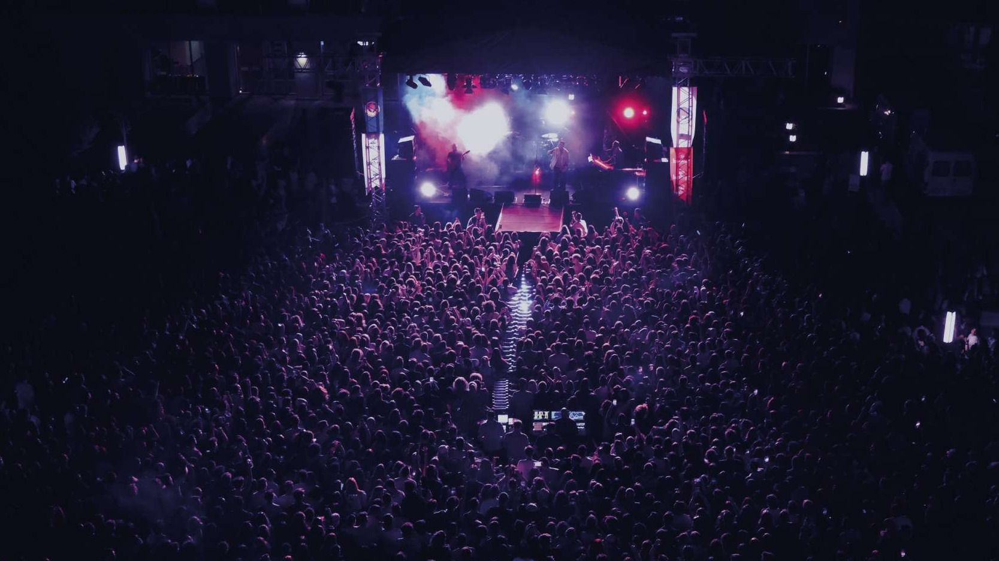

✳ TED Üniversitesi / Ankara
Şehrin ortasında.
Ritmin içinde.

Bir kampüs dolusu müzik, keşif ve karşılaşma.
Bu enerjide senin de yerin var.
Ses açılır. Anılar birikir.♫

Birlikte daha yüksek sesle.TEDÜ Fest arşivinden
Kampüste
buluşalım!✹
buluşalım!✹
Müzik. Kültür. Birlikte.İyi ki buradayız.TED Üniversitesi Bahar Şenliği